Pengantar Pengaduan Kepada Bank Indonesia
- Alternatif 1 : Aduan Melalui bicara131.bi.go.id
- Alternatif 2 : Aduan Melalui Portal BI.go.id
Aduan Melalui Bicara.go.id
Kamu bisa melakukan pengaduan konsumen terkait kendala yang kamu alami sebagai nasabah / pengguna dari penyedia jasa pembayaran (PJP) melalui langkah-langkah mudah berikut ini.
-
Akses website portal aduan melalui https://bicara131.bi.go.id
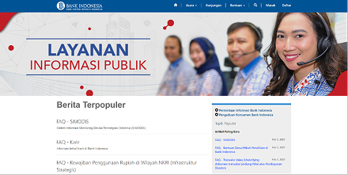 -
Pilih menu 'Daftar' pada bagian menu atas
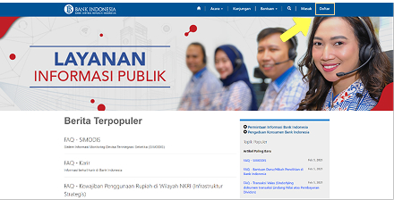 -
Lengkapi formulir pendaftaran dengan data yang valid dan benar
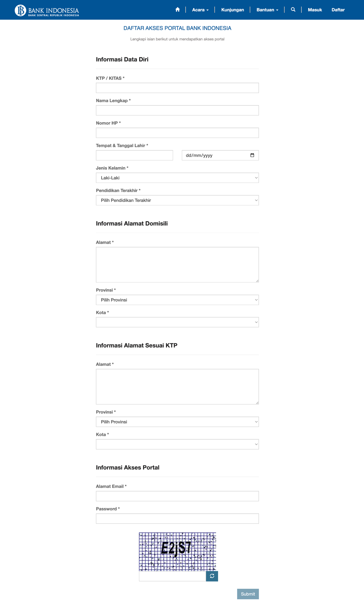Setelah formulir pendaftaran lengkap, klik tombol 'Daftar', kamu akan diarahkan ke halaman konfirmasi email jika berhasil mendaftar di portal aduan.
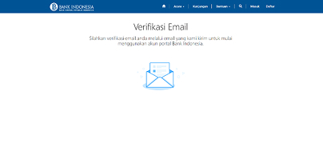 -
Verifikasi email Kamu melalui email yang dikirimkan pada email terdaftar
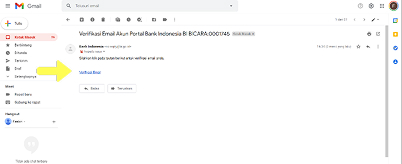Klik link pada email, setelah verifikasi email berhasil, kamu dapat masuk ke portal aduan menggunakan akun yang telah didaftarkan.
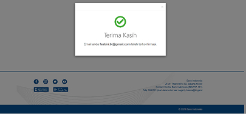 -
Masuk / Login ke akun Kamu melalui https://bicara131.bi.go.id
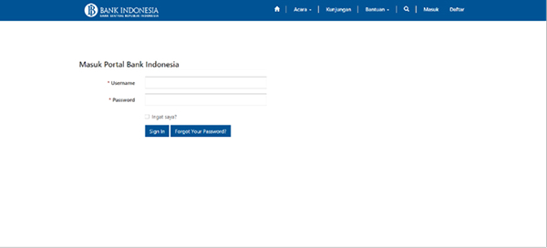 -
Buat pengaduan baru, dengan mengikuti langkah berikut:
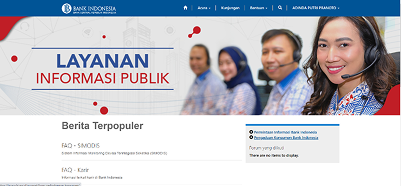- Step 1: klik menu ‘Bantuan’
- Step 2: pilih ‘Kasus Saya’
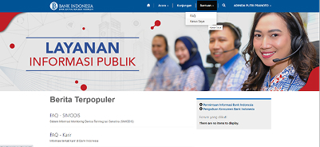 - Step 3: selanjutnya klik ‘Buat Tiket Perlindungan Konsumen’

- Step 4: Ketikkan judul, dianjurkan mengikuti format yang sudah disediakan

- Step 5: Isi form yang disediakan sesuai dengan kebutuhan
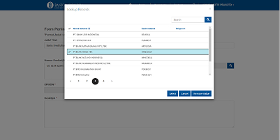 - Step 6: upload file yang berkaitan dengan pengadu
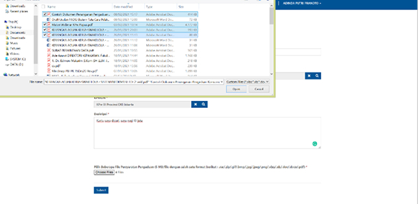 - Step 7: File bisa diupload bersamaan dengan syarat yang sudah tercantum pada portal dengan cara klik ‘browse’ dan gunakan multiple select dengan menahan tombol ‘Shift’ + klik ke dokumen-dokumen yang ingin ditambahkan
- Step 8: klik ‘Submit’
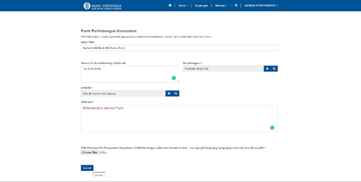 - Step 9: tiket akan terlihat di daftar
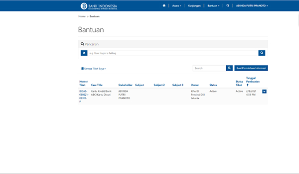
-
Cek daftar kasus pengaduan yang telah dibuat
- Step 1: klik menu ‘Bantuan’
- Step 2: pilih ‘Kasus Saya’
- Step 3: pilih case perlindungan konsumen yang diinginkan
-
Kamu bisa melakukan konsultansi untuk kasus yang sudah kamu buat
- Step 1: Konsumen dan penyelenggara bisa saling merespon case tersebut / melakukan pertukaran pendapat dengan cara klik ‘Add Comment’
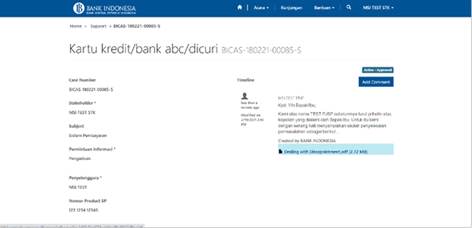 - Step 2: Konsumen dan penyelenggara bisa melakukan pertukaran dokumen dengan klik ‘Add Comment’

- Step 3: Konsumen akan memutuskan hasil dari case perlindungan tersebut
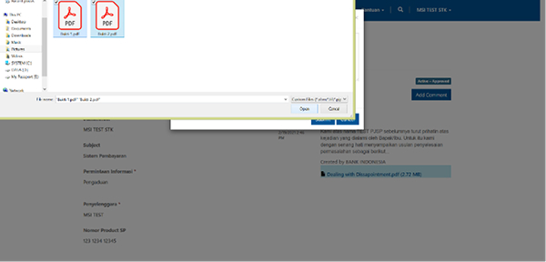 - Step 4: Jika sudah Puas, konsumen bisa memilih ‘Selesai’. Apabila konsumen belum puas dengan hasil pertukaran pendapat, konsumen dapat memilik opsi ‘Permohonan Fasilitasi’
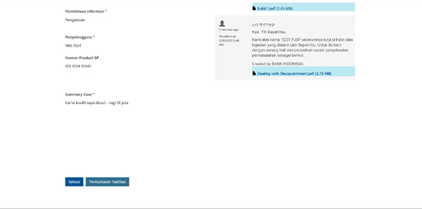
- Step 1: Konsumen dan penyelenggara bisa saling merespon case tersebut / melakukan pertukaran pendapat dengan cara klik ‘Add Comment’
-
Kamu bisa mengajukan untuk `Permohonan Fasilitasi` terkait aduan Kamu
- Step 1: Jika konsumen memilih opsi ‘Permohonan Fasilitasi’ maka stakeholder harus mengisi field ‘Alasan Tidak Sepakat’

- Step 2: ‘Klik Submit’
- Step 3: Konsumen menerima email notifikasi berisikan waktu dan tempat fasilitasi
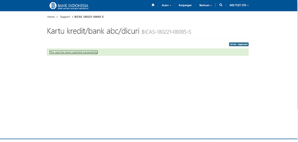
- Step 1: Jika konsumen memilih opsi ‘Permohonan Fasilitasi’ maka stakeholder harus mengisi field ‘Alasan Tidak Sepakat’
Aduan Melalui Portal bi.go.id
Kamu bisa melakukan pengaduan konsumen terkait kendala yang kamu alami sebagai nasabah / pengguna dari penyedia jasa pembayaran (PJP) melalui langkah-langkah mudah berikut ini.
-
Akses website portal aduan melalui https://bi.go.id

-
Pilih menu ‘Layanan’
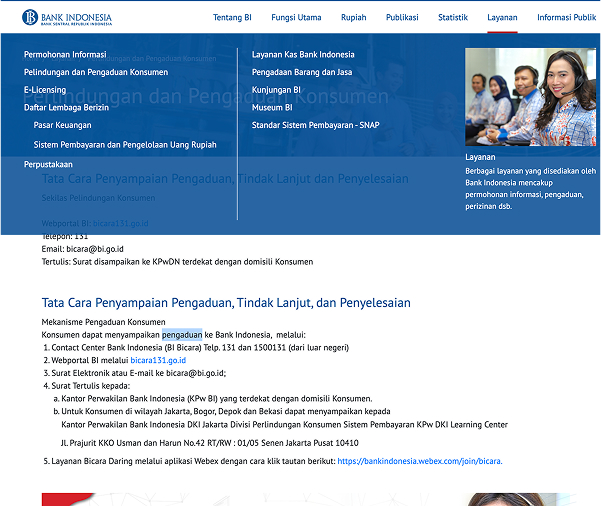 -
Pilih sub menu ‘Pengaduan Konsumen’
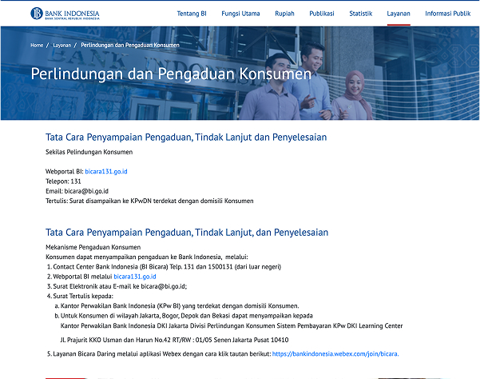 -
kamu bisa melakukan pelaporan dengan pilihan lain seperti :
- Telepon: Contact Center Bank Indonesia (BI Bicara) Telp 131 dan 1500131 (dari luar negeri)
- Email: Surat Elektronik atau E-mail ke bicara@bi.go.id
- Surat Tertulis kepada:
Kantor Perwakilan Bank Indonesia (KPw BI) yang terdekat dengan domisili Konsumen.
Untuk Konsumen di wilayah Jakarta, Bogor, Depok dan Bekasi dapat menyampaikan kepada
Kantor Perwakilan Bank Indonesia DKI Jakarta Divisi Perlindungan Konsumen Sistem Pembayaran KPw DKI Learning Center
Jl. Prajurit KKO Usman dan Harun No.42 RT/RW : 01/05 Senen Jakarta Pusat 10410 - Layanan Bicara Daring melalui aplikasi Webex dengan cara klik tautan berikut: https://bankindonesia.webex.com/join/bicara.